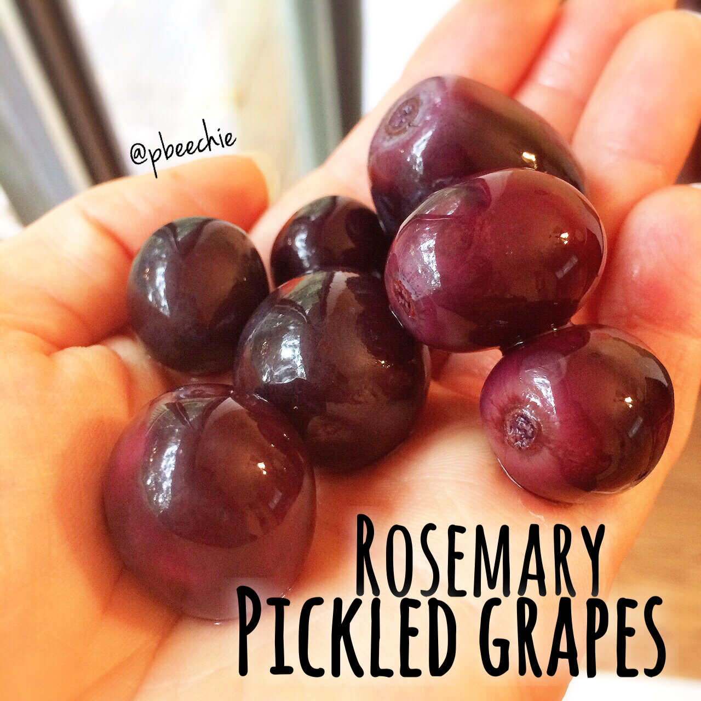

Rosemary Pickled Grapes
Okay wait hang on give me a second. This is delicious though. This is the recipe from yesterday that ya'll asked for me to share! My coworker brought these in to work one day and I looked at her like 


 . I tweaked her recipe to healthify it for myself, and I looove ittttt. Every time I eat one, I go through 9 levels of flavors in my mouth. 9. Full. Levelssss. Like a step function. But the levels occur in different orders each time. And they neither increase or decrease steadily. So they have no actual pattern at all. But there's definitely 9 of them. So. Now you know what pickled grapes are like yeah? ...No? Try them. It's mindblowing.
. I tweaked her recipe to healthify it for myself, and I looove ittttt. Every time I eat one, I go through 9 levels of flavors in my mouth. 9. Full. Levelssss. Like a step function. But the levels occur in different orders each time. And they neither increase or decrease steadily. So they have no actual pattern at all. But there's definitely 9 of them. So. Now you know what pickled grapes are like yeah? ...No? Try them. It's mindblowing.
- 6 cups (2 lbs) seedless grapes
- 1 cup water
- 2 cups vinegar
- 1 TBSP sea salt
- 2 TBSP stevia
- Leaves off of one 4 inch sprig of rosemary (Or 1 TBSP dried rosemary)
- 3 cloves peeled and crushed garlic
- 1/2 tsp crushed red pepper flakes
Pack the grapes into jars. Combine the other ingredients in a pot and bring to a simmer. Then pour this over the grapes. If you run out of liquid, just add more water. Let cool to room temperature on the counter, then cool in fridge for 1 hour before serving. Store in fridge; the flavor enhances as the days go by.